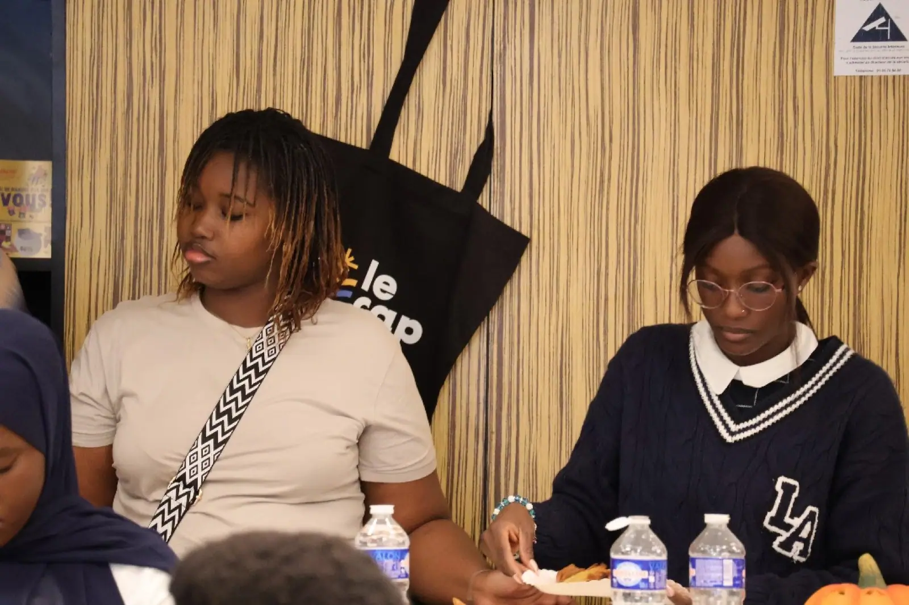
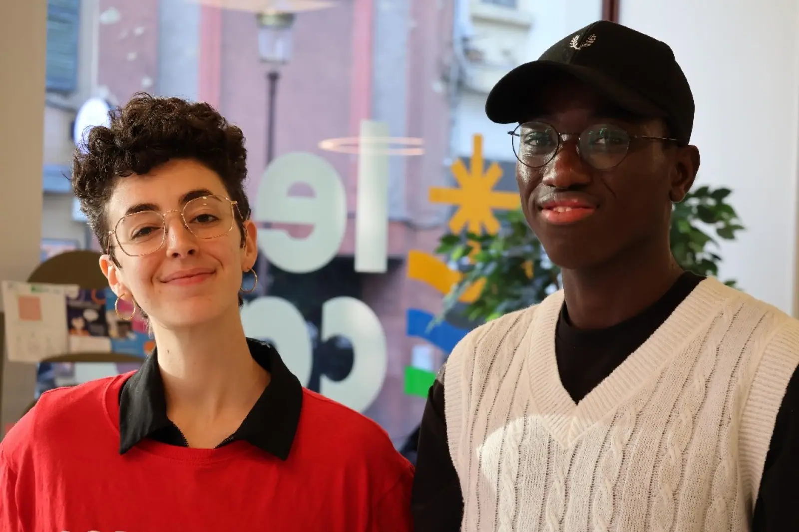

Arriver à Metz : le guide des premières semaines
Logement, CAF, préfecture, banque, inscription : l'ordre dans lequel s'y prendre.
Lire l'articleNumérique
Un accueil de rentrée ressemble d'habitude à une présentation de l'association, un verre partagé, quelques échanges pour se rassurer sur ce qui attend les nouveaux arrivants. Le 18 septembre 2025, l'AESM a ajouté un ingrédient qu'on ne voit pas souvent dans ce genre de rencontre : une initiation à l'intelligence artificielle.
La rencontre s'est tenue au CAP, le lieu de vie étudiant que l'AESM utilise régulièrement pour ses événements. L'intervention a été animée par M. Abdoulaye Ba, expert sénégalais en gouvernance de l'intelligence artificielle. Le choix du sujet n'avait rien de gratuit : beaucoup des étudiants présents commençaient tout juste leur cursus, à un moment où l'IA s'invite de plus en plus dans les études, quel que soit le domaine.

Avant l'intervention proprement dite, l'AESM a présenté l'association aux nouveaux venus — ce qu'elle fait, comment la contacter, ce que représentent les différentes commissions. Une manière de rappeler que l'accompagnement ne s'arrête pas à cette seule rencontre. La séance s'est ensuite ouverte à un temps de questions-réponses, où les échanges ont porté aussi bien sur des questions techniques que sur des interrogations plus larges concernant l'usage de ces outils dans un parcours universitaire.

La soirée s'est terminée autour d'un cocktail, dans une ambiance plus détendue — l'occasion, pour beaucoup de nouveaux arrivants, d'échanger directement avec des membres du bureau et de mettre un visage sur les personnes qui répondent habituellement aux messages envoyés depuis Dakar quelques mois plus tôt.

Ce n'est pas la dernière fois que le sujet reviendra : l'intelligence artificielle pèse déjà sur la manière dont beaucoup d'étudiants travaillent, et l'AESM compte continuer à ouvrir ce genre de discussion plutôt que de le laisser de côté.
À lire aussi
Logement, CAF, préfecture, banque, inscription : l'ordre dans lequel s'y prendre.
Lire l'article
Le 17 avril, une après-midi d'ateliers ; le 16 mai, l'anniversaire du CAP.
Lire l'article